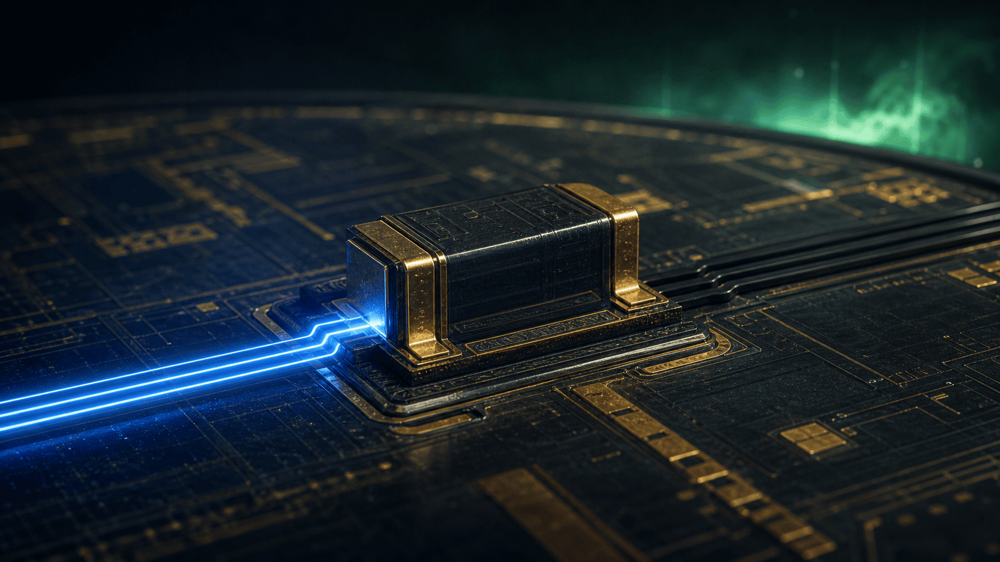
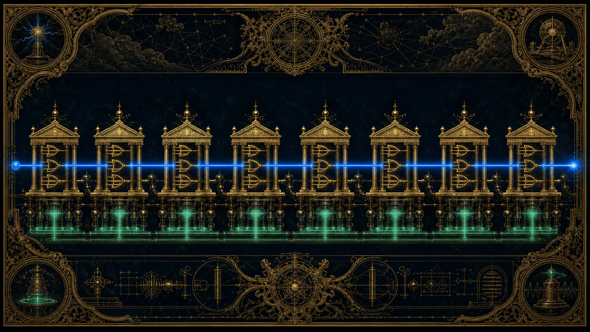
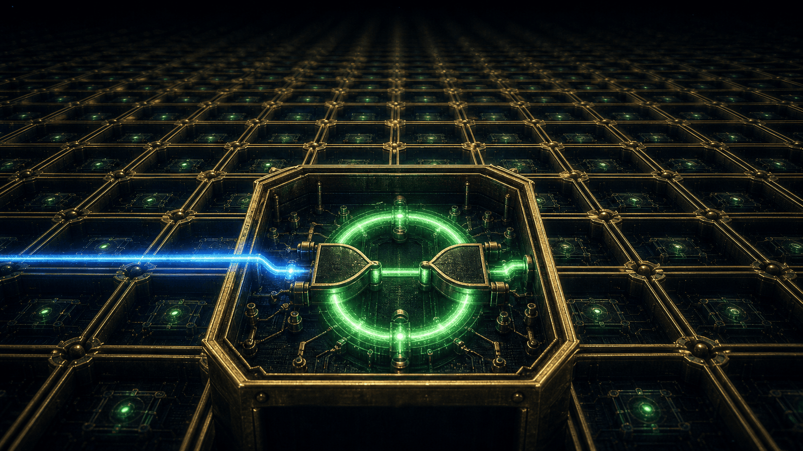
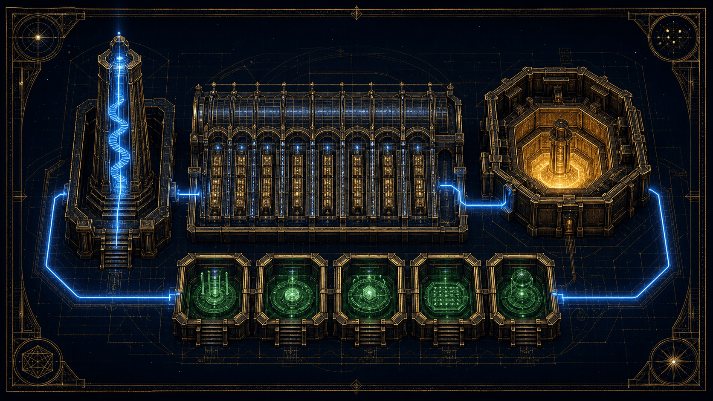
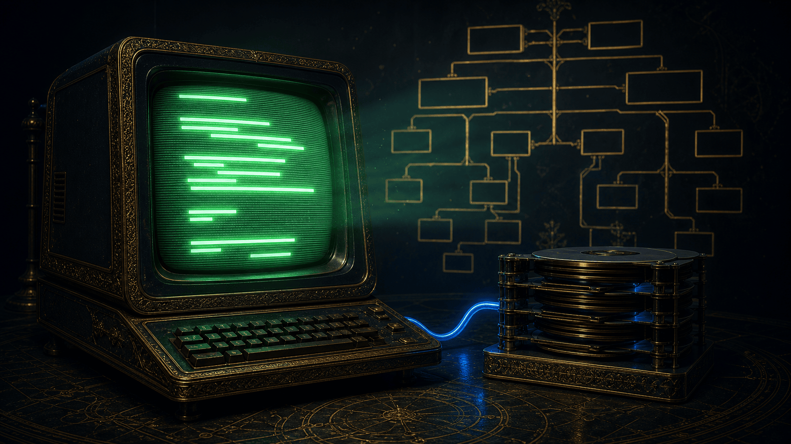

Intention
Personne ne sait comment marche un ordinateur
Ou plutôt : presque personne ne l'a vu en entier. On connaît un étage — le sien. L'électronicien sait ce qu'est une porte NON-ET, le développeur sait ce qu'est une boucle for, et entre les deux s'étend une zone grise où l'on préfère dire « et là, la magie opère ».
Il n'y a pas de magie. Il y a une douzaine d'idées, chacune assez simple pour tenir en un paragraphe, empilées les unes sur les autres jusqu'à ce que l'ensemble devienne capable de calculer une trajectoire lunaire ou d'afficher un chat.
Ce dossier reconstruit la pile complète, du courant qui passe jusqu'au unix$ qui clignote. Il s'appuie sur un objet précis : un simulateur logique nodal écrit par Samlepirate, qui contient, dans un seul onglet de navigateur, un ordinateur 8 bits complet — portes, processeur, mémoire, assembleur, compilateur C, amorceur, disque et système. Tout ce qui est affirmé ici a été vérifié dans son code source.
Et surtout : à chaque étage, vous pouvez toucher. Quinze expériences jalonnent le parcours — chacune montée dans son châssis d'instrument, interrupteurs, afficheurs et tube compris. La quatorzième est un processeur 8 bits qui s'exécute réellement dans cette page.
Le bit — il y a du courant, ou il n'y en a pas.
Le transistor — un interrupteur commandé par un autre fil.
Les portes — six décisions élémentaires sur un ou deux bits.
L'additionneur — la première machine qui calcule.
La mémoire — une boucle de courant qui se souvient d'elle-même.
L'ALU — huit opérations, trois drapeaux, une décision.
Le processeur — chercher, décoder, exécuter, recommencer.
Le langage — assembleur, puis C, puis un système.
Objectifs de lecture
Ce que vous saurez faire en refermant ce dossier
Reconnaître les six portes, suivre un signal d'un bout à l'autre d'un schéma, et comprendre pourquoi une retenue met huit fois plus de temps qu'une addition sur un bit.
Savoir ce que contient un processeur — registres, drapeaux, compteur ordinal, pile — et suivre un cycle chercher-décoder-exécuter pas à pas.
Voir une ligne de C devenir de l'assembleur, l'assembleur devenir des octets, et les octets devenir un caractère à l'écran.
 Dossier réalisé par
Samlepirate
d'après son simulateur logique nodal — Simulateur Logique Nodal, un ordinateur 8 bits complet dans une page web
Dossier réalisé par
Samlepirate
d'après son simulateur logique nodal — Simulateur Logique Nodal, un ordinateur 8 bits complet dans une page web
Chapitre premier
Le bit, ou l'art de ne rien savoir dire

Un ordinateur ne sait pas ce qu'est un nombre. Il ne sait pas ce qu'est une lettre, une couleur, une date. Il sait une seule chose, et il la sait très mal : est-ce qu'il y a du courant sur ce fil, oui ou non.
C'est le bit : une grandeur qui ne prend que deux valeurs. On les note 0 et 1, mais on pourrait dire « éteint / allumé », « bas / haut », « faux / vrai ». Ce choix binaire n'est pas une élégance mathématique : c'est un aveu de faiblesse. Un circuit électronique est incapable de distinguer proprement dix niveaux de tension pendant des milliards d'opérations par seconde sans se tromper. Deux, en revanche, il y arrive.
Toute la suite consiste à contourner cette pauvreté en mettant les bits côte à côte. Avec un bit, deux états. Avec deux bits, quatre. Avec huit, deux cent cinquante-six — et ces deux cent cinquante-six états suffiront pour représenter tous les caractères d'un clavier, tous les niveaux de rouge d'un pixel, ou tous les nombres de 0 à 255.
Avec n fils, on distingue N états différents, parce que chaque fil ajouté double le nombre de combinaisons. Huit fils — un octet — donnent 256 valeurs, soit les entiers de 0 à 255. C'est exactement la largeur de la machine étudiée ici : c'est pour cela qu'on l'appelle une machine 8 bits.
Reste à donner du sens à ces états. Un paquet de huit bits ne « contient » pas le nombre 42 : on décide de le lire comme 42. La convention est celle de la numération de position, la même qu'à l'école primaire — sauf qu'au lieu de puissances de dix, on utilise des puissances de deux.
Chaque bit bi pèse . Le bit 0 (le plus à droite) vaut 1, le bit 7 (le plus à gauche) vaut 128. Additionner les poids des bits à 1 donne la valeur. Rien d'autre ne se passe : le circuit, lui, ne fait qu'allumer ou éteindre huit fils.
Le transistor : un interrupteur qui obéit à un fil
Entre le bit abstrait et la porte logique, il y a un composant physique : le transistor. Dans le simulateur, il est modélisé de la façon la plus dépouillée possible — un interrupteur dont l'ouverture est commandée par un troisième fil, la grille.
OUT = IN, si GATE = 1 ← l'interrupteur est fermé, le signal passe OUT = 0, si GATE = 0 ← l'interrupteur est ouvert, rien ne passe
Cette description est volontairement idéalisée : un vrai transistor MOS a des seuils, des courants de fuite, des temps de commutation, et il ne délivre pas un zéro parfait. Mais elle suffit à voir naître la logique, parce que deux transistors mis bout à bout ou côte à côte font déjà quelque chose de remarquable :
- En série — le signal ne traverse que si les deux grilles sont à 1. C'est un ET.
- En parallèle — le signal passe dès qu'au moins une grille est à 1. C'est un OU.
- Seul — il recopie son entrée sous contrôle. C'est un tampon commandé.
Voilà le saut décisif, et il tient en une phrase : la logique n'est pas ajoutée à l'électricité, elle est une conséquence de la façon dont on branche les fils. À partir d'ici, on peut oublier les électrons et ne plus parler que de 0 et de 1.
Voici la porte NON-ET telle qu'on la construit vraiment, en technologie CMOS : quatre transistors, deux en haut qui tirent la sortie vers le +5 V, deux en bas qui la tirent vers la masse. Actionnez A et B. Un transistor vert laisse passer ; un fil bleu porte un 1. Les grilles qui portent le même nom sont reliées entre elles.
Ce qui se passe
Règle des deux familles
Un PMOS conduit quand sa grille est à 0. Un NMOS conduit quand sa grille est à 1. Les deux familles sont exactement complémentaires — c'est de là que vient le C de CMOS.
C'est la raison pour laquelle le NON-ET est la porte naturelle du silicium, et le ET une porte dérivée : le montage ci-dessus inverse spontanément. Pour obtenir un ET, il faut lui ajouter un inverseur — deux transistors de plus. Le simulateur, lui, part du niveau au-dessus : il prend les six portes comme primitives.
Écrivez quelque chose. Chaque caractère devient un octet, rangé dans une case numérotée. Cliquez sur n'importe quel octet du vidage : la même suite de huit bits est relue de cinq façons différentes — et l'une d'elles est un ordre.
Les codes 32 à 126 sont les 95 caractères imprimables de l'ASCII. La norme paraît en 1963 (ASA X3.4-1963) — mais sans minuscules : elles n'y sont ajoutées qu'à la révision de 1967. Au-delà de 127, il n'y a plus de norme unique : le même octet donne é, Ú ou un caractère de contrôle selon la table employée. Les octets concernés sont signalés en orange — c'est toute l'histoire des accents mal affichés.
Chapitre deuxième
Six portes, et le monde entier
Une porte logique prend un ou deux bits et en produit un. Elle n'a pas de mémoire, pas d'état, pas d'histoire : à entrées identiques, sortie identique, toujours. C'est une fonction, au sens le plus strict.
On peut donc la décrire entièrement par un tableau minuscule qu'on appelle une table de vérité : deux entrées binaires, quatre lignes, une colonne de sortie. Quatre bits de description, et la porte n'a plus de secret. Le simulateur en propose six, qui sont celles de toute l'électronique numérique :
| Porte | Se lit | Sortie à 1 quand… | Écriture |
|---|---|---|---|
| ET (AND) | « et » | les deux entrées valent 1 | a & b |
| OU (OR) | « ou » inclusif | au moins une entrée vaut 1 | a | b |
| OU-X (XOR) | « ou » exclusif | les entrées sont différentes | a ^ b |
| NON-ET (NAND) | « pas les deux » | ce n'est pas le cas que les deux valent 1 | !(a & b) |
| NON-OU (NOR) | « ni l'un ni l'autre » | les deux entrées valent 0 | !(a | b) |
| NON (NOT) | l'inverseur | l'entrée unique vaut 0 | a ? 0 : 1 |
Trois remarques valent qu'on s'y arrête.
Le OU logique n'est pas le « ou » du français. Quand on dit « fromage ou dessert », on veut dire l'un ou l'autre mais pas les deux : c'est le OU exclusif. Le OU des circuits est inclusif — les deux, c'est vrai aussi. Cette ambiguïté du langage courant est une source d'erreurs constante, et elle explique pourquoi le OU-X (exclusive or, XOR) a fini par exister comme porte à part entière.
Le OU exclusif est un détecteur de différence. C'est la lecture la plus utile : si et seulement si A et B ne sont pas égaux. Cette propriété sera au cœur de l'addition, du comparateur, du chiffrement et des sommes de contrôle. Retenez-la : le OU-X compare.
Les portes inversées ne sont pas des curiosités. Le NON-ET et le NON-OU semblent des versions négatives, moins naturelles. En électronique, c'est exactement l'inverse : ce sont elles qui sont les moins chères à fabriquer, et le chapitre suivant montre qu'elles sont capables de tout.
Avec la notation classique : pour le ET, pour le OU, la barre pour la négation. En français : « pas (A et B) » équivaut à « (pas A) ou (pas B) ». Ces deux identités, énoncées par Augustus De Morgan au XIXe siècle, permettent de transformer n'importe quel circuit en un circuit équivalent où les inverseurs ont été déplacés — c'est le premier outil d'optimisation des ingénieurs.
Choisissez une porte, actionnez les interrupteurs A et B. Le fil devient bleu quand il porte un 1 — c'est la convention exacte du simulateur. La ligne correspondante de la table de vérité s'allume.
Table de vérité
| A | B | Sortie |
|---|
Les six fonctions sont celles définies dans src/logic/gates.ts du simulateur. Aucune n'est approximée ici : les valeurs affichées sont calculées avec les mêmes opérateurs binaires.
Chapitre troisième
La porte qui suffit à tout
Si l'on ne devait garder qu'une seule porte, laquelle ? La réponse est contre-intuitive : ni le ET, ni le OU. Le NON-ET.
Le NON-ET (NAND) est dite universelle : n'importe quelle fonction logique, si compliquée soit-elle, peut être construite uniquement avec des NON-ET. Pas besoin d'inverseur, pas besoin de OU exclusif, pas besoin d'un catalogue de composants. Une seule brique, répétée.
La démonstration tient en trois montages, et vous pouvez les manipuler ci-dessous :
- L'inverseur — on branche la même entrée sur les deux pattes. . Une porte.
- Le ET — un NON-ET suivi d'un inverseur (lui-même un NON-ET). Deux portes.
- Le OU — on inverse chaque entrée, puis on les passe dans un NON-ET. C'est De Morgan lu à l'envers. Trois portes.
Une fois le ET, le OU et le NON reconstruits, tout le reste suit : le OU exclusif, l'additionneur, la mémoire, le processeur. La chaîne entière repose sur une brique unique.
Trois identités, une seule porte. Un ensemble d'opérateurs capable d'exprimer toute fonction booléenne est dit fonctionnellement complet ; le NON-ET l'est à lui seul, et le NON-OU aussi. Le résultat est publié par Henry M. Sheffer en 1913 — d'où le nom de barre de Sheffer donné à cette opération en logique. Charles Sanders Peirce l'avait pourtant établi dès 1880, dans un manuscrit resté inédit jusqu'en 1933 : la paternité, ici, revient à celui qui a publié.
Pourquoi le NON-ET plutôt que le ET ? Parce qu'en technologie CMOS — celle de toutes les puces modernes — un NON-ET à deux entrées se fabrique avec quatre transistors, tandis qu'un ET en demande six : il faut d'abord faire le NON-ET, puis l'inverser. La porte « naturelle » du silicium est la porte inversée. L'industrie a donc bâti des milliards de circuits sur la brique qui, sur le papier, paraissait la moins élégante.
Choisissez la fonction à reconstruire, puis actionnez A et B. Le montage n'utilise que des NON-ET. La ligne de vérification compare, à chaque instant, la sortie du montage avec celle de la porte de référence.
Le montage est simulé porte par porte, dans l'ordre de propagation. La colonne « référence » applique directement l'opérateur binaire du langage — si les deux colonnes coïncident sur les quatre combinaisons, l'équivalence est vérifiée.
Chapitre quatrième
La première machine qui calcule

Jusqu'ici, rien ne calcule. Les portes décident, elles ne comptent pas. Le passage à l'arithmétique tient dans une observation d'école primaire, transposée en base deux.
Posez l'addition 1 + 1 en binaire. Le résultat est 10 : un zéro, et une retenue. C'est tout le problème et toute la solution. Additionner deux bits produit deux bits : une somme et une retenue.
Le demi-additionneur
Regardez la table des quatre cas possibles :
| A | B | Somme | Retenue | Remarque |
|---|---|---|---|---|
| 0 | 0 | 0 | 0 | rien |
| 0 | 1 | 1 | 0 | un seul bit à 1 |
| 1 | 0 | 1 | 0 | un seul bit à 1 |
| 1 | 1 | 0 | 1 | ça déborde : on retient |
La colonne « Somme » est exactement la table du OU exclusif. La colonne « Retenue » est exactement celle du ET. On n'a rien inventé : l'addition binaire était déjà dans les portes, il suffisait de les regarder sous le bon angle.
Un OU exclusif pour la somme, un ET pour la retenue. On l'appelle demi-additionneur parce qu'il ne sait pas recevoir de retenue entrante — il ne peut donc pas être chaîné, et ne sert que pour le bit de poids le plus faible.
L'additionneur complet
Pour chaîner, il faut un troisième port d'entrée : la retenue venue du rang précédent, notée . On additionne alors trois bits, et le résultat tient toujours sur deux : une somme et une retenue sortante.
La construction canonique — celle du module « Additionneur 1-bit » livré avec le simulateur — enchaîne deux demi-additionneurs et réunit leurs retenues par un OU :
La somme vaut 1 quand un nombre impair d'entrées vaut 1 — c'est la généralisation du OU exclusif à trois termes. La retenue sort si A et B valent tous deux 1 (on génère une retenue), ou si exactement l'un des deux vaut 1 et qu'une retenue arrivait déjà (on la propage). Cette distinction entre génération et propagation est la clé de toutes les optimisations d'additionneurs rapides.
Cinq portes : deux OU exclusifs, deux ET, un OU. C'est le décompte réel du circuit livré dans le simulateur — on peut l'ouvrir et les compter.
La documentation du simulateur annonce, pour ce module, « 3 XOR + 2 AND + 1 OR = 6 gates ». Le circuit réellement construit dans le code (src/data/prebuiltModules.ts) contient 2 OU-X, 2 ET et 1 OU, soit 5 portes — et par conséquent 40 portes pour l'additionneur 8 bits, et non 48. La documentation compte une porte de trop ; c'est le code qui fait foi, et le chiffre correct est celui de la théorie classique.
Huit étages, une retenue qui traverse
Il ne reste plus qu'à empiler. On place huit additionneurs complets côte à côte ; la retenue sortante de chacun devient la retenue entrante du suivant. C'est l'additionneur à propagation de retenue (ripple carry adder) — littéralement : la retenue « ondule » d'un bout à l'autre.
bit 0 : A0 + B0 + Cin → S0, C0 bit 1 : A1 + B1 + C0 → S1, C1 bit 2 : A2 + B2 + C1 → S2, C2 ... bit 7 : A7 + B7 + C6 → S7, Cout ← le débordement au-delà de 255
Cette simplicité a un coût, et c'est le premier vrai compromis d'architecture du dossier : le bit 7 ne peut pas être calculé avant que la retenue ait traversé les sept étages précédents. Le temps de calcul est proportionnel au nombre de bits.
Avec n le nombre de bits. Sur 8 bits, c'est acceptable. Sur 64 bits, ce serait catastrophique : c'est pourquoi les processeurs modernes utilisent des additionneurs à anticipation de retenue (), qui calculent les retenues en parallèle à partir des signaux de génération et de propagation, au prix de beaucoup plus de portes. Le temps devient alors proportionnel à plutôt qu'à .
Le neuvième bit — celui qui sort par le haut et n'a nulle part où aller — porte un nom qui reviendra sans cesse dans ce dossier : la retenue, le drapeau carry. C'est la trace de ce que la machine a été incapable de garder.
Actionnez A, B et Cin. Chaque fil s'allume en bleu quand il porte un 1 ; les cinq portes du montage réagissent. Huit combinaisons, huit lignes : la table complète est en face.
Table de vérité — 3 entrées
| A | B | Cin | S | Cout |
|---|
Montage identique au module « Additionneur 1-bit » du simulateur : deux demi-additionneurs (XOR 1 / AND 1, puis XOR 2 / AND 2) dont les retenues sont réunies par un OU.
Réglez les deux opérandes, puis lancez la propagation pour voir la retenue avancer d'étage en étage, exactement comme dans le circuit. Le bit de gauche est le poids fort (128), celui de droite le poids faible (1).
Résultat
Ce qui se passe
Calcul strictement identique à la fonction add8() du simulateur : huit additionneurs complets chaînés, retenue propagée du bit 0 vers le bit 7.
Chapitre cinquième
Comparer, c'est soustraire et regarder ce qui reste
Un ordinateur qui ne sait qu'additionner ne fait rien d'intéressant. Ce qui le rend utile, c'est la capacité de bifurquer : faire une chose si un nombre est plus grand qu'un autre, une autre sinon. Or comparer deux nombres n'est pas une opération de plus. C'est une soustraction qu'on jette.
Calculez et ne gardez pas le résultat. Gardez seulement trois informations sur ce résultat — trois bits qu'on appelle des drapeaux (flags) :
| Drapeau | Nom | Vaut 1 quand… | Ce qu'il révèle |
|---|---|---|---|
| Z | Zéro | le résultat sur 8 bits est exactement 0 | A = B — égalité |
| C | Retenue | le calcul complet est sorti de l'intervalle 0–255 | A < B — emprunt, ou débordement d'une addition |
| N | Négatif | le bit 7 du résultat vaut 1 (valeur ≥ 128) | le signe, si l'on lit en complément à deux |
Trois bits, et la comparaison complète est faite. Si Z vaut 1, les nombres sont égaux. Si Z vaut 0 et C vaut 1, alors A est strictement inférieur à B. Si Z et C valent tous deux 0, A est strictement supérieur. Il n'existe pas de quatrième cas.
Les crochets valent 1 si la condition est vraie, 0 sinon. Le drapeau N reprend simplement le bit 7 du résultat tronqué : il n'a de sens que si l'on décide de lire les octets comme des entiers signés — ce que ce processeur ne fait pas par défaut, puisque ses entiers vont de 0 à 255.
Sur ce processeur, l'instruction qui fait ce travail s'appelle CMP : elle calcule la différence, met les drapeaux à jour, et jette le résultat. Le registre A n'est pas modifié. Les instructions de saut conditionnel — JZ, JNZ, JC, JNC, JN — lisent ensuite ces drapeaux et décident d'aller ailleurs ou non.
Il n'y a pas de « circuit de comparaison » séparé dans cette machine. Comparer, c'est soustraire ; décider, c'est lire trois bits. Toute la logique conditionnelle d'un programme — les if, les while, les for — finit dans ces trois fils.
Sur cette machine comme sur les vraies, certaines instructions modifient les drapeaux et d'autres non. STA (ranger A en mémoire) ne les touche pas. POP, LDM, INC, DEC les modifient tous.
Glisser un POP entre un CMP et un JZ détruit silencieusement la comparaison : le saut teste alors le résultat du POP. Le programme ne plante pas, il se trompe. C'est la source de bug la plus classique de la programmation en assembleur — et elle n'a rien d'exotique : les processeurs x86 et ARM ont exactement le même piège.
Réglez A et B. La machine calcule A − B, met les drapeaux à jour et jette le résultat. En dessous, l'état de chaque saut conditionnel : pris ou non pris.
Ce que fait CMP
Les sauts conditionnels
| Instruction | Condition | Décision |
|---|
Les drapeaux sont calculés exactement comme dans updateFlags() du processeur simulé : Z sur le résultat tronqué à 8 bits, N sur son bit 7, C sur le résultat complet avant troncature.
Chapitre sixième
L'unité arithmétique et logique
On sait additionner. On sait comparer. On sait faire des ET et des OU sur des bits. Il ne reste qu'à ranger tout cela dans une seule boîte, avec une manette pour choisir ce qu'on veut.
Cette boîte s'appelle l'ALU — Arithmetic Logic Unit, unité arithmétique et logique. C'est le cœur calculatoire du processeur. Elle prend deux nombres de 8 bits, un code d'opération de 3 bits, et rend un résultat de 8 bits accompagné des trois drapeaux.
Trois bits de commande, donc opérations possibles. Ni plus, ni moins — et c'est exactement ce que propose celle du simulateur :
| op2 op1 op0 | Opération | Effet | Retenue |
|---|---|---|---|
| 0 0 0 | ADD | A + B | 1 si le total dépasse 255 |
| 0 0 1 | SUB | A − B | 1 si le résultat passe sous 0 |
| 0 1 0 | AND | A & B | — |
| 0 1 1 | OR | A | B | — |
| 1 0 0 | XOR | A ^ B | — |
| 1 0 1 | NOT | ~A | — (B ignoré) |
| 1 1 0 | SHL | A << 1 | reçoit le bit 7 éjecté |
| 1 1 1 | SHR | A >> 1 | reçoit le bit 0 éjecté |
Les deux dernières méritent une explication, car ce sont les plus rentables de toute l'informatique. Décaler les bits d'un cran vers la gauche revient à multiplier par deux ; d'un cran vers la droite, à diviser par deux. Dans les deux cas, aucun calcul n'est effectué : on renomme les fils, c'est tout.
Un décalage coûte un seul cycle et zéro logique arithmétique. C'est pourquoi le compilateur C du simulateur applique une réduction de force : il transforme x * 8 en trois décalages à gauche, x / 4 en deux décalages à droite, et x % 8 en un simple ET avec 7. La division entière par une puissance de deux est arrondie vers le bas — les bits éjectés à droite sont définitivement perdus.
Une remarque de vocabulaire, pour finir. Le drapeau « retenue » ne signifie pas la même chose selon l'opération : après une addition, il annonce un débordement au-delà de 255 ; après une soustraction, un emprunt sous zéro ; après un décalage, il recueille le bit qui vient d'être éjecté. Un seul fil, trois significations — l'économie de moyens poussée jusqu'à l'ambiguïté. C'est au programmeur de savoir ce qu'il vient de demander.
Choisissez l'opération avec les trois interrupteurs de commande — ou directement dans la liste. Réglez A et B, lisez le résultat et les drapeaux.
Sortie
Drapeaux
Sémantique reprise ligne à ligne du nœud alu8 du simulateur : troncature à 8 bits, retenue selon l'opération, drapeaux Z et N calculés sur le résultat tronqué.
Chapitre septième
Se souvenir : la boucle qui se mord la queue

Toutes les portes vues jusqu'ici ont une propriété commune : elles oublient. Coupez l'entrée, la sortie disparaît. Il n'y a nulle part où l'information puisse rester. Or sans mémoire, il n'y a ni variable, ni programme, ni ordinateur.
La solution est d'une élégance déconcertante, et elle consiste à faire exactement ce que tout schéma logique interdit : rebrancher la sortie sur l'entrée.
Le verrou : deux portes qui se tiennent
Prenez deux portes NON-ET. Branchez la sortie de la première sur une entrée de la seconde, et la sortie de la seconde sur une entrée de la première. Vous venez de créer une boucle de rétroaction.
Que se passe-t-il ? Supposez que la première sorte un 1. Ce 1 entre dans la seconde, qui sort donc un 0. Ce 0 revient dans la première, qui — puisqu'un NON-ET avec une entrée à 0 sort forcément 1 — confirme son 1. Le système est stable. Il tiendra ainsi tant qu'il y aura du courant.
Et l'état inverse est tout aussi stable. Deux états stables, donc : c'est une bascule bistable, un latch. Elle a mémorisé un bit — non pas en le stockant quelque part, mais en continuant à le produire. Une mémoire électronique est un circuit qui n'arrête jamais de se répéter la même chose.
NAND1(D, WE) → S̄ ← ordre « mettre à 1 » NOT(D) → D̄ NAND2(D̄, WE) → R̄ ← ordre « mettre à 0 » NAND3(S̄, Q̄) → Q ┐ les deux portes croisées NAND4(R̄, Q) → Q̄ ┘ se maintiennent mutuellement WE = 1 → Q suit D (la cellule est transparente) WE = 0 → Q tient (la boucle s'auto-alimente, D n'a plus d'effet)
Le fil WE (write enable, autorisation d'écriture) est le verrou proprement dit. À 1, la cellule laisse passer la donnée. À 0, elle se referme sur elle-même, et rien de ce qui se passe sur D ne l'atteint plus. Cinq portes pour mémoriser un bit ; quarante pour mémoriser un octet.
Du verrou au registre, puis à la mémoire
Un verrou transparent pose un problème pratique : tant que WE est à 1, la sortie suit l'entrée en temps réel, et le moindre parasite passe. On préfère donc une variante qui ne capture qu'à un instant précis — le registre à front d'horloge, dont le chapitre suivant explique le mécanisme.
Au-dessus, on empile : huit cellules partageant le même signal d'écriture forment un registre 8 bits. Un millier de registres, munis d'un décodeur d'adresse, forment une mémoire vive (SRAM). Le principe reste identique — c'est une question de quantité, et de la logique qui choisit à quelle cellule on parle.
La mémoire de cette machine tient sur 13 bits d'adresse, soit 8 192 octets — c'est la valeur codée en dur dans son jeu d'instructions (MEMORY_SIZE = 8192, masque d'adresse 0x1FFF). C'est peu : un texte de trois pages. C'est aussi assez pour un système d'exploitation, comme la suite le montrera.
La hiérarchie de vitesse, elle, est la même que dans n'importe quelle machine moderne, à quelques ordres de grandeur près : les registres sont dans le processeur et répondent immédiatement ; la mémoire vive est à côté et coûte un accès ; le disque est ailleurs, et coûte cher. Un ordinateur passe une part considérable de son temps à déplacer des octets entre ces trois étages.
Mettez WE à 1 : la sortie Q suit D. Remettez WE à 0, puis changez D autant que vous voulez — Q ne bouge plus. Vous venez de mémoriser. La boucle de rétroaction, en bas du schéma, est ce qui tient la valeur.
Journal de la cellule
Montage identique au module « Mémoire 1-bit » du simulateur. La boucle est résolue par itérations successives jusqu'à stabilisation, exactement comme le fait son moteur de simulation.
Chapitre huitième
Le battement
Il manque encore quelque chose d'essentiel, et ce n'est pas un composant de calcul : c'est du temps.
Un circuit purement combinatoire n'a pas de temps. Les signaux se propagent, chacun à sa vitesse, à travers des chemins de longueurs différentes. Pendant quelques nanosecondes après un changement d'entrée, les sorties sont dans un état transitoire absurde — des valeurs intermédiaires qui n'ont aucun sens et qu'on appelle des aléas. Si un registre les capture, le calcul est faux.
D'où l'horloge : un signal qui alterne indéfiniment entre 0 et 1, à intervalles réguliers. Elle ne calcule rien. Elle ne transporte aucune information. Elle dit une seule chose, et elle la dit tout le temps : maintenant.
L'horloge du simulateur se règle entre 0,5 et 10 Hz — assez lentement pour qu'on voie les signaux bouger à l'œil nu. Une machine de 1983 tournait autour du mégahertz : le 6510 du Commodore 64 était cadencé à ≈ 1 MHz, le Z80 du ZX Spectrum à 3,5 MHz. Un processeur de bureau actuel dépasse les 4 milliards de battements par seconde, soit un milliard de fois plus vite que le simulateur — mais il fait, à chaque battement, exactement le même genre de choses.
Le front, pas le niveau
Ce qui compte n'est pas que l'horloge soit à 1, mais l'instant de la transition de 0 vers 1 : le front montant. C'est là, et seulement là, que les registres regardent leurs entrées et décident de les recopier.
Horloge : 0 0 1 1 0 0 1 1 0
↑ ↑
front montant front montant
(on capture) (on capture)
À chaque front montant :
si RST = 1 → valeur ← 0 (remise à zéro)
sinon si LOAD = 1 → valeur ← D (capture de l'entrée)
sinon → valeur inchangée (maintien)
Entre deux fronts : la valeur ne bouge pas, quoi qu'il arrive sur D.
C'est cette discipline qui rend un ordinateur prévisible. Entre deux fronts, la logique combinatoire a tout le temps de se stabiliser ; au front suivant, on ne capture que des valeurs propres. Le rôle de l'horloge n'est pas d'accélérer la machine, c'est de synchroniser ses erreurs — de garantir qu'à l'instant où l'on regarde, tout est arrivé.
Et c'est aussi la limite ultime de la vitesse d'un processeur. La période de l'horloge doit être plus longue que le plus lent des chemins combinatoires — le chemin critique. Souvenez-vous du chapitre IV : sur un additionneur à propagation de retenue 8 bits, ce chemin critique, c'est la retenue qui traverse les huit étages. Voilà pourquoi le choix de l'additionneur détermine la fréquence maximale de toute la machine.
Lancez l'horloge, puis changez D n'importe quand. Observez : la sortie Q ne bouge qu'aux fronts montants, marqués en pointillés. Coupez LOAD et le registre ignore tout.
État du registre
Journal des fronts
Comportement identique au nœud register8 du simulateur : détection de front par mémorisation de l'état précédent de l'horloge, priorité à la remise à zéro sur le chargement.
Chapitre neuvième
Assembler la machine

Nous avons maintenant tous les organes : de quoi calculer (l'ALU), de quoi retenir (les registres et la mémoire), de quoi choisir (les multiplexeurs), et de quoi rythmer (l'horloge). Il reste à décider comment les brancher — et ce choix a un nom.
C'est l'architecture de von Neumann, formulée en 1945 dans le rapport sur l'EDVAC : une mémoire unique qui contient à la fois les données et les instructions. Le programme n'est plus un câblage, ni des cartes perforées à changer à la main : c'est un nombre parmi d'autres, rangé au même endroit que le reste.
Cette confusion volontaire entre code et données est l'idée la plus lourde de conséquences de toute l'informatique. Elle rend possible le compilateur — un programme qui écrit des programmes. Elle rend possible le système d'exploitation — un programme qui en charge d'autres. Elle rend possible, aussi, le virus et le débordement de tampon, puisque rien ne distingue physiquement une instruction d'une donnée.
Les organes du processeur
| Registre | Nom | Rôle | Largeur |
|---|---|---|---|
| A | Accumulateur | Le registre principal. Tout résultat de calcul y atterrit. | 8 bits |
| B | Registre auxiliaire | Le second opérande des opérations à deux entrées. | 8 bits |
| PC | Compteur ordinal | L'adresse de la prochaine instruction à exécuter. | 13 bits utiles |
| SP | Pointeur de pile | Le sommet de la pile ; démarre en haut de la mémoire, à 0x1FFF. | 13 bits utiles |
| IR | Registre d'instruction | Contient l'opcode en cours de décodage. | 8 bits |
| Z C N | Drapeaux | La mémoire du dernier calcul : nul, débordé, négatif. | 1 bit chacun |
Deux registres de travail. Un ordinateur entier tient sur deux registres de huit bits. Tout le reste — les tableaux, les chaînes de caractères, les structures, les images — vit en mémoire, et doit faire l'aller-retour par A ou par B pour être touché.
La boucle éternelle
Le processeur ne fait qu'une chose, et il la refait jusqu'à ce qu'on l'arrête :
- Chercher (fetch) — lire en mémoire l'octet situé à l'adresse contenue dans PC.
- Décoder (decode) — regarder cet octet et savoir de quelle instruction il s'agit, et si elle est suivie d'un opérande.
- Exécuter (execute) — faire ce qu'elle dit : additionner, ranger, sauter, afficher.
- Avancer — ajouter à PC la taille de l'instruction, et recommencer.
C'est tout. Ce cycle est la définition même d'un processeur, et il n'a pas changé depuis 1945. Un cœur de processeur moderne en exécute plusieurs par cycle d'horloge, dans le désordre, en spéculant sur les branchements — mais la boucle reste celle-là.
Un programme n'est pas « lancé » : il est déroulé. La seule chose qui avance, c'est un nombre — le compteur ordinal. Un saut, un appel de fonction, une boucle, un plantage : ce sont tous des façons différentes d'écrire une nouvelle valeur dans PC.
Un programme de quatre instructions est en mémoire. Avancez d'une phase à la fois pour voir quelles unités s'allument et quels bus transportent quoi — ou lancez l'exécution automatique.
Le programme en mémoire
État de la machine
Les quatre phases sont une décomposition pédagogique : le processeur simulé exécute en réalité une instruction complète par appel de sa fonction step(). Le découpage chercher / décoder / exécuter / avancer est celui de son code, phase par phase.
Chapitre dixième
Huit mille cent quatre-vingt-douze octets
Toute la mémoire de la machine tient dans 8 192 cases. Il n'y a pas de mémoire virtuelle, pas de pagination, pas de protection : une seule étendue plate, numérotée de 0 à 8191, et une convention pour se répartir la place.
Cette convention n'est pas imposée par le matériel — le processeur ne sait rien de ce découpage. C'est le compilateur et l'amorceur qui se mettent d'accord, et qui s'y tiennent :
Trois choses méritent d'être soulignées dans ce plan.
Le code est plafonné à 4 096 octets. Pas 4 096 lignes : 4 096 octets. Comme une instruction pèse un ou trois octets, cela fait entre 1 300 et 4 000 instructions. C'est la contrainte structurante de toute la programmation sur cette machine, et c'est pourquoi son compilateur C consacre autant d'efforts à réduire la taille du code produit.
Il n'y a que seize variables globales. Seize octets, adresses 0x1000 à 0x100F. La dix-septième est refusée par le compilateur, avec une erreur. Un tableau global de dix cases en consomme dix à lui seul.
La pile croît vers le bas. Elle démarre à 0x1FFF, tout en haut, et descend à chaque empilement. Les cadres de fonctions, eux, montent depuis 0x1020. Les deux zones se font face et se rapprochent : si elles se rencontrent, la machine écrase silencieusement ses propres données. Ce phénomène — le débordement de pile — est ici parfaitement visible, alors qu'il est masqué par le système d'exploitation sur une machine moderne.
Chaque CALL empile l'adresse de retour sur deux octets (l'adresse est sur 16 bits). Pour une fonction récursive, le compilateur sauvegarde en plus le cadre courant avant l'appel et le restaure au retour ; pour une fonction ordinaire, il s'en dispense entièrement. Avec 2 048 octets de pile, une récursion profonde finit par mordre sur les données — et rien ne l'en empêche : il n'y a aucun garde-fou à l'exécution.
Deux valeurs circulent dans la documentation du simulateur pour le disque externe : 8 Ko / 32 pages d'un côté, 64 Ko / pages de 256 octets de l'autre. Le code fait foi : DRIVE_SIZE = 65536 et DRIVE_PAGE_SIZE = 256, soit 64 Ko répartis en 256 pages. La mention « 8 Ko » est un vestige d'une version antérieure.
La documentation du projet est riche et précise, mais elle est écrite à la main : quand elle diverge du code, c'est le code qui décrit la machine.
Toute la mémoire de la machine, à l'échelle : un pixel par octet, 128 colonnes, 64 lignes, l'adresse 0 en haut à gauche. Survolez pour lire une adresse. Puis lancez la récursion sans fin et regardez la pile descendre depuis 0x1FFF jusqu'à mordre sur les cadres de fonctions — sans que rien ne l'en empêche.
Pointeur de pile
SP — adresse du sommet, en hexadécimal
Journal
La récursion est exécutée par le vrai processeur de ce dossier, pas par une animation : chaque niveau consomme trois octets — deux pour l'adresse de retour empilée par CALL, un pour le PUSH. La collision affichée est celle que produit le compte réel des octets.
Chapitre onzième
Le vocabulaire de la machine
Le processeur lit des octets et les interprète. La liste des octets qui veulent dire quelque chose, avec leur signification exacte, s'appelle le jeu d'instructions — l'ISA, Instruction Set Architecture. C'est le contrat entre le matériel et tout ce qui tournera dessus.
Celui de cette machine compte 62 instructions. À titre de comparaison, le 6502 en avait 56, le Z80 environ 250, un processeur x86 moderne plusieurs milliers avec ses extensions. Soixante-deux, c'est assez peu pour tenir sur une page — et assez pour faire tourner un système.
L'encodage : un ou trois octets
Comment sait-on où finit une instruction et où commence la suivante ? Par une convention magnifiquement simple : le premier bit de l'opcode le dit.
opcode 0x00 … 0x7F → 1 octet l'instruction se suffit à elle-même opcode 0x80 … 0xFF → 3 octets suivie d'un opérande 16 bits, poids faible d'abordINC→ 01LDA 42→ 80 2A 00 ← 42 = 0x2A, puis l'octet de poids fortJMP 0x0103→ A0 03 01 ← petit-boutiste : 03 avant 01
Autrement dit : si le bit 7 de l'opcode vaut 1, il y a un opérande. Le décodeur n'a qu'un seul bit à regarder. C'est exactement le genre de décision qu'on prend quand on conçoit le matériel en même temps que le langage.
L'ordre des octets de l'opérande — le moins significatif en premier — s'appelle le petit-boutisme (little-endian). C'est la convention du x86 et de la plupart des ARM ; l'inverse, le gros-boutisme, régnait sur les Motorola 68000 et reste la norme des protocoles réseau. Le nom vient des Voyages de Gulliver, où deux nations entrent en guerre pour savoir par quel bout casser un œuf à la coque. C'est Danny Cohen qui a importé la métaphore en informatique, en 1980, dans une note au titre éloquent : On Holy Wars and a Plea for Peace — une plaisanterie d'ingénieur devenue vocabulaire officiel.
Les soixante-deux mots
Le vocabulaire complet, groupé par famille. La colonne « drapeaux » est celle qu'il faut connaître par cœur avant d'écrire une boucle.
| Code | Mnémonique | Taille | Effet | Drapeaux |
|---|---|---|---|---|
| 0x00 | NOP | 1 | ne fait rien | — |
| 0x0F | HLT | 1 | arrête le processeur | — |
| 0x01 | INC | 1 | A ← A + 1 | oui |
| 0x02 | DEC | 1 | A ← A − 1 | oui |
| 0x03 | NOT | 1 | A ← NON A, bit à bit | oui |
| 0x04 | SHL | 1 | A ← A décalé à gauche (×2) | oui |
| 0x05 | SHR | 1 | A ← A décalé à droite (÷2) | oui |
| 0x06 | TAB | 1 | B ← A | — |
| 0x07 | TBA | 1 | A ← B | oui |
| 0x08 | ADDB | 1 | A ← A + B | oui |
| 0x09 | SUBB | 1 | A ← A − B | oui |
| 0x13 | ANDB | 1 | A ← A ET B | oui |
| 0x14 | ORB | 1 | A ← A OU B | oui |
| 0x15 | XORB | 1 | A ← A OU-X B | oui |
| 0x16 | CMPB | 1 | drapeaux ← A − B, sans ranger | oui |
| 0x17 | MULB | 1 | A ← A × B | oui |
| 0x18 | DIVB | 1 | A ← A ÷ B (0 si B = 0) | oui |
| 0x19 | MODB | 1 | A ← A modulo B (0 si B = 0) | oui |
| 0x0A | INA | 1 | A ← caractère saisi (0 si rien) | oui |
| 0x0B | GETKEY | 1 | A ← état de la touche d'indice A | oui |
| 0x0C | RAND | 1 | A ← octet pseudo-aléatoire | oui |
| 0x0D | SLEEP | 1 | attend A cycles | — |
| 0x11 | PUSH | 1 | empile A | — |
| 0x12 | POP | 1 | A ← dépile | oui |
| 0x10 | RET | 1 | dépile l'adresse de retour (16 bits) et y saute | — |
| 0x20 | OUTA | 1 | affiche A comme caractère | — |
| 0x21 | OUTD | 1 | affiche A comme nombre décimal | — |
| 0x1E | CLCON | 1 | efface la console | — |
| 0x22 | DRAW | 1 | trace le pixel (A, B) dans la couleur courante | — |
| 0x23 | CLR | 1 | efface l'écran graphique | — |
| 0x1A · 0x1B · 0x1C | COLR · COLG · COLB | 1 | fixe le rouge / vert / bleu du tracé depuis A | — |
| 0x24 · 0x25 | DRVRD · DRVWR | 1 | lit / écrit un octet du disque externe | — |
| 0x26 · 0x27 | DRVCLR · DRVPG | 1 | efface le disque / choisit la page courante | — |
| 0x1D | HTTPIN | 1 | A ← octet suivant de la réponse HTTP | oui |
| 0x80 · 0x81 | LDA · LDB | 3 | A ← valeur immédiate · B ← valeur immédiate | LDA seul |
| 0x82 · 0x83 | ADD · SUB | 3 | A ← A ± valeur immédiate | oui |
| 0x84 · 0x85 · 0x86 | AND · OR · XOR | 3 | opération bit à bit avec une valeur immédiate | oui |
| 0x87 | CMP | 3 | drapeaux ← A − valeur, sans ranger | oui |
| 0x90 · 0x92 | STA · STB | 3 | MEM[adr] ← A · MEM[adr] ← B | — |
| 0x91 · 0x93 | LDM · LBM | 3 | A ← MEM[adr] · B ← MEM[adr] | LDM seul |
| 0x94 | LDAI | 3 | A ← MEM[adr + A] — lecture indexée | oui |
| 0x95 | STAI | 3 | MEM[adr + B] ← A — écriture indexée | — |
| 0x96 · 0x97 | HTTPGET · HTTPPOST | 3 | lance une requête HTTP décrite en mémoire | — |
| 0xA0 | JMP | 3 | saut inconditionnel | — |
| 0xA1 · 0xA2 | JZ · JNZ | 3 | saut si Z / si non Z | — |
| 0xA3 · 0xA4 | JC · JNC | 3 | saut si retenue / si pas de retenue | — |
| 0xA5 | JN | 3 | saut si drapeau négatif | — |
| 0xB0 | CALL | 3 | empile l'adresse de retour (2 octets) et saute | — |
| 0xC0 | OUT | 3 | affiche une valeur immédiate comme caractère | — |
L'assembleur : deux passes, et c'est réglé
Écrire ces octets à la main serait insupportable. On écrit donc des mnémoniques — LDA 42 plutôt que 80 2A 00 — et un programme traduit. Ce programme s'appelle un assembleur, et c'est le plus simple des traducteurs : une ligne de source donne une instruction machine, sans réorganisation ni optimisation.
Une seule difficulté, mais elle est réelle : les étiquettes. Quand on écrit JMP boucle, l'assembleur doit remplacer boucle par une adresse — qu'il ne connaît pas encore si l'étiquette est plus bas dans le fichier. D'où la solution classique, en deux passes :
- Première passe — parcourir tout le source en comptant les octets, sans rien produire, pour noter l'adresse de chaque étiquette.
- Seconde passe — reparcourir en produisant les octets, en remplaçant chaque étiquette par l'adresse relevée à la première passe.
C'est exactement ce que fait l'assembleur du simulateur — et c'est aussi ce que fait celui qui tourne dans l'expérience suivante.
Composez un octet en cliquant sur ses bits. Le bit 7, cerclé d'or, est le seul que le décodeur regarde pour savoir si l'instruction est suivie d'un opérande. Sous le décodeur, un flux d'octets bruts : voyez où le processeur découpe.
Octet à décoder
Verdict du décodeur
Découpage d'un flux d'octets
Le découpage est celui de la fonction de désassemblage de cette page, qui applique la règle du simulateur : opcode < 0x80 → l'instruction fait un octet ; opcode ≥ 0x80 → deux octets d'opérande suivent, poids faible d'abord. Un octet qui ne correspond à aucun opcode connu est rendu tel quel, en .db.
Chapitre douzième
La machine, ici, maintenant
Onze chapitres de théorie appellent une vérification. Voici donc un processeur 8 bits complet — assembleur deux passes, mémoire de 8 192 octets, pile, registres, drapeaux, console — qui s'exécute réellement dans cette page, dans votre navigateur, sans rien télécharger.
Il implémente le jeu d'instructions du chapitre précédent, à l'exception des périphériques matériels (écran graphique, clavier, disque, réseau) qui n'auraient pas de sens ici. Tout le reste est là : les mêmes opcodes, les mêmes drapeaux, le même encodage petit-boutiste, la même pile qui descend depuis 0x1FFF.
Les sept programmes fournis ont été assemblés et exécutés sur le processeur d'origine avant d'être placés ici. Leurs sorties correspondent, octet pour octet.
Registres
Console
Mémoire — zone des variables (0x1000)
Assembleur deux passes et processeur écrits pour cette page, mais conformes ligne à ligne au jeu d'instructions du simulateur. Les périphériques graphiques, clavier, disque et réseau ne sont pas implémentés ici — pour ceux-là, ouvrez le simulateur complet ↗.
Chapitre treizième
Écrire en C sur une machine de 1983
L'assembleur marche. Il est aussi épuisant : trois lignes pour incrémenter une variable, une étiquette pour chaque if, et pas de fonction sans gérer soi-même la pile. Au-dessus, il faut un langage.
Le simulateur embarque un vrai compilateur C — pas un interpréteur, pas un simulateur de C : un compilateur qui produit du texte assembleur, lequel passe ensuite par l'assembleur du chapitre précédent pour devenir des octets. Le dialecte est réduit, mais la chaîne est complète, et elle a quatre étages.
code C
│
▼
1 · PRÉPROCESSEUR remplace les #define — substitution de texte, rien de plus
│
▼
2 · ANALYSEUR LEXICAL découpe le texte en lexèmes :
│ « int x = 42; » → [int] [x] [=] [42] [;]
▼
3 · ANALYSEUR SYNTAXIQUE construit un arbre qui dit la structure
│ (descente récursive, avec priorités d'opérateurs)
▼
4 · GÉNÉRATEUR DE CODE parcourt l'arbre et émet de l'assembleur
│
▼
texte ASM → [assembleur deux passes] → octets → [processeur]
Voir la traduction
Rien ne vaut un exemple. Voici trois programmes C, avec l'assembleur réellement produit par le compilateur du simulateur — sorties obtenues en exécutant sa chaîne de compilation, pas reconstituées à la main.
Trois observations sur ces traductions.
Le compilateur n'est pas naïf. Pour x + y, il ne passe pas par la pile : il charge x dans A, y dans B, et fait un ADDB. Il replie les constantes (2 + 3 devient LDA 5), supprime les branches mortes, élimine les fonctions jamais appelées, et remplace les multiplications par des puissances de deux par des décalages. Ces optimisations lui ont fait gagner environ 31 % de taille de code sur ses trente-six exemples embarqués.
Les variables ont des adresses fixes. 0x1020, 0x1021 : ce sont les cadres de fonctions du chapitre X. Le compilateur y range les locales et les paramètres, et réutilise les mêmes octets pour des fonctions qui ne coexistent jamais.
La récursion coûte cher, et seulement là où il faut. Regardez l'exemple récursif : avant l'appel, un PUSH sauvegarde le cadre courant ; après le RET, un POP le restaure. Pour une fonction ordinaire, ce va-et-vient disparaît complètement.
Un C qui mord
Ce dialecte est petit, et ses limites sont pédagogiquement précieuses parce qu'elles rendent visibles des choses que le C moderne cache :
- tous les
intsont des entiers non signés sur 8 bits — 0 à 255, avec repliement silencieux au-delà ; - les chaînes sont des tableaux terminés par un zéro, et rien d'autre ;
- les tableaux ne sont pas vérifiés : écrire dans
t[12]d'un tableau de 8 cases écrase la variable d'à côté, sans avertissement ; - les tableaux passés en paramètre sont copiés à l'aller et au retour — ce n'est pas la sémantique de pointeur du vrai C, et deux paramètres tableau recevant le même tableau ne s'aliasent pas ;
- pas de pointeurs, pas de structures, pas de
switch, pas de flottants, pas d'allocation dynamique ; - la division par zéro ne plante pas : elle rend 0, comme le processeur.
Le débordement de tampon n'est pas un bug du C : c'est ce qui arrive quand personne ne vérifie, et que le code et les données partagent la même mémoire plate. Sur cette machine, on peut le provoquer en trois lignes et regarder la variable voisine se faire écraser. C'est probablement la meilleure leçon de sécurité informatique qu'on puisse donner en cinq minutes.
Chapitre quatorzième
Le système, le disque et l'invite qui clignote

Il reste une marche, et c'est la plus étrange : faire en sorte que la machine puisse charger et lancer d'autres programmes que celui qu'on lui a donné. C'est-à-dire, au fond, qu'elle cesse d'être une machine à un seul usage.
Cela demande trois choses : un amorceur qui démarre, un stockage qui survit à l'extinction, et un format pour s'y retrouver.
Le disque : ce qui reste
La mémoire vive s'efface à chaque réinitialisation. Le disque externe de cette machine, non — c'est sa propriété définissante. Il fait 65 536 octets découpés en 256 pages de 256 octets, et le processeur y accède par quatre instructions seulement : choisir une page, lire un octet, écrire un octet, tout effacer.
Quatre instructions. À partir de là, tout le reste — les fichiers, les répertoires, les programmes installés — est une convention que le logiciel s'impose à lui-même.
octet 0 marqueur magique ← « ce disque est formaté » octet 1 version du système de fichiers octet 0x10 début du répertoire 64 entrées page 4 début des données des fichiers Chaque entrée de répertoire contient : nom · type · page de début · nombre de pages · taille type 1 = fichier texte type 2 = programme exécutable
Un système de fichiers, c'est cela : une zone qui dit où sont les choses, et une zone où sont les choses. Il n'y a pas de magie supplémentaire dans ext4 ou NTFS — seulement des dizaines d'années d'optimisations, de journalisation et de tolérance aux pannes empilées sur cette même idée.
L'amorçage : le programme qui charge les programmes
Au démarrage, le processeur commence à l'adresse 0x0000, quoi qu'il arrive. Pour qu'il puisse lancer un programme choisi, il faut d'abord y placer un programme qui sache choisir : l'amorceur (bootloader).
Celui-ci s'installe en haut de la mémoire, affiche une invite, lit une commande, cherche le fichier correspondant dans le répertoire du disque, recopie le programme vers l'adresse 0x0000, puis y saute. Le programme chargé dispose alors de tout l'espace de code normal, comme s'il avait été le seul depuis le début.
Et quand il exécute HLT, la machine ne meurt pas : l'amorceur reprend la main et réaffiche son invite. C'est, en trois phrases, la définition fonctionnelle d'un système d'exploitation — un programme qui survit aux programmes.
unix$ ls
fichiers motd readme story url result DIGITS LETTERS
programmes hello sysinfo uname pwd bootcat argdump wc head
wget ascii upper echoio plot nano glxnano glxsh
cp mv grep jsonp
unix$ run bootcat readme ← lance un programme avec un fichier en argument
unix$ run wget url ← récupère une URL et écrit la réponse dans « result »
unix$ run glxnano readme ← éditeur plein écran sur l'écran graphique
unix$ free ← état de la mémoire
unix$ help
Le disque livré avec la machine contient une petite distribution : cinq fichiers texte, deux fichiers de polices binaires (DIGITS et LETTERS, indispensables à l'affichage graphique) et vingt programmes — utilitaires en ligne de commande, éditeurs de texte, client HTTP. Les noms sont familiers — ls, cat, grep, head, wc, cp, mv, wget, nano — et ce n'est pas une coquetterie : ce sont les mêmes rôles, réduits à leur plus simple expression.
Le passage d'arguments, en huit octets
Comment un programme lancé par run bootcat readme sait-il quel fichier ouvrir ? Par la méthode la plus directe qui soit : l'amorceur résout le nom avant de sauter, et dépose le résultat à une adresse convenue.
0x1018 nombre d'arguments (0 ou 1) 0x1019 page du répertoire où se trouve l'entrée 0x101A position dans cette page 0x101B type de l'entrée (texte ou programme) 0x101C première page de données 0x101D nombre de pages 0x101E taille en octets 0x101F indice de l'entrée dans le répertoire
Huit octets à une adresse fixe : voilà l'ancêtre direct du argv du C, des variables d'environnement, et de tout ce qui permet à un programme de savoir sur quoi il travaille. La chaîne est complète, du transistor à l'argument de ligne de commande.
Trois instructions du processeur — HTTPGET, HTTPPOST, HTTPIN — lancent des requêtes et lisent la réponse octet par octet. Mais il faut être exact sur ce point : ce n'est pas une pile TCP/IP construite en portes logiques. C'est un pont vers le fetch() du navigateur hôte, exposé comme un périphérique. Le simulateur le dit lui-même dans sa documentation, et c'est honnête : implémenter Ethernet, IP, TCP et TLS à ce niveau représenterait un projet d'une tout autre ampleur.
La leçon reste valable : du point de vue du programme, le réseau est un périphérique — on lui écrit une adresse, on lit des octets, et un drapeau dit « ce n'est pas encore arrivé ».
Chapitre quinzième
Ce que 255 nous a appris
On pourrait croire que le petit format de cette machine est un défaut à excuser. C'est l'inverse : ses limites sont exactement ce qui la rend instructive, parce qu'elles rendent visibles des phénomènes que les machines modernes se contentent de masquer.
Le débordement d'entier
Ici, 255 + 1 = 0. Le neuvième bit n'existe pas ; il part dans le drapeau de retenue, et le compteur repart de zéro. Rien ne plante, rien n'avertit — le programme continue avec un nombre faux.
Cette arithmétique modulaire n'est pas une bizarrerie du jouet. C'est celle de tous les processeurs. Le 4 juin 1996, le vol inaugural d'Ariane 5 s'est achevé par la destruction du lanceur une quarantaine de secondes après le début de la séquence de vol. La cause, établie par la commission d'enquête : trente-sept secondes après le début de la séquence d'allumage du moteur principal, la conversion d'une valeur de vitesse horizontale d'un flottant 64 bits vers un entier signé 16 bits a débordé — la valeur ne tenait pas dedans, et cette conversion-là, contrairement à d'autres, n'était pas protégée. Le même mécanisme qu'ici, avec quelques chiffres de plus, et un lanceur emportant les quatre satellites scientifiques Cluster.
Le résultat rangé est 44, et la seule trace de l'erreur est le drapeau de retenue. Si le programme ne le teste pas, l'information est définitivement perdue. C'est pourquoi JC et JNC existent — et pourquoi les langages modernes proposent des additions « vérifiées » qui coûtent un test de plus.
Le débordement de tampon
Un tableau de huit cases occupe huit octets consécutifs. Écrire dans la case 12 écrit quatre octets plus loin — c'est-à-dire dans la variable suivante, ou dans un cadre de fonction, ou dans la pile. Il n'y a aucune vérification, ni à la compilation, ni à l'exécution.
Sur cette machine, on peut faire l'expérience et voir, dans le visualiseur de mémoire, la variable d'à côté changer de valeur. Sur une machine moderne, la même erreur produit soit un plantage incompréhensible, soit — bien pire — un programme qui continue à tourner en obéissant à des données qu'un attaquant a écrites. Toute une famille de failles de sécurité tient dans cette absence de vérification.
Le plafond de code
4 096 octets. Un programme trop gros est refusé, point final. Cette contrainte oblige à un exercice devenu rare : choisir ce qu'on n'écrit pas. Elle explique aussi pourquoi les logiciels de cette époque tenaient sur une disquette — non pas par vertu, mais parce qu'il n'y avait pas d'autre option.
« Vous vous souvenez de l'époque où afficher une seule lettre à l'écran relevait déjà du combat de boss ? Vous vous souvenez quand votre plus grand nombre sérieux, adulte, responsable, c'était 255 ? »
Ce qui n'a pas changé depuis 1983
Un processeur moderne est infiniment plus rapide, plus large, plus parallèle. Il exécute plusieurs instructions par cycle, dans le désordre, en devinant à l'avance quelles branches seront prises. Il a des caches à trois niveaux, une unité de calcul flottant, des instructions vectorielles, de la virtualisation matérielle, du chiffrement câblé.
Et pourtant. Il cherche toujours une instruction à l'adresse contenue dans un compteur ordinal. Il additionne toujours avec des retenues qui se propagent. Il compare toujours en soustrayant. Il se souvient toujours grâce à des boucles de rétroaction. Il décide toujours en regardant trois ou quatre bits de drapeaux. Il déborde toujours en silence.
La complexité s'est empilée ; les fondations n'ont pas bougé. C'est pour cela qu'une machine de 8 192 octets peut encore expliquer celle sur laquelle vous lisez ces lignes.
Un registre de huit bits, un afficheur, et rien d'autre. Ajoutez, doublez, laissez tourner : à 255, le neuvième bit n'a nulle part où aller. La lampe retenue s'allume le temps d'une opération — c'est la seule trace, et si le programme ne la lit pas, l'information est perdue.
Lecture non signée — 0 à 255
Les huit bits, inchangés
Deux lectures, un seul octet
La bascule « lecture signée » ne touche à aucun bit. Elle change seulement la convention : en lecture signée, le bit 7 cesse de valoir +128 pour valoir −128, et l'intervalle devient −128 … +127. Le processeur, lui, ne sait pas laquelle des deux vous avez choisie — c'est le programme qui décide, et c'est le programme qui se trompe.
Le calcul est celui du processeur du dossier : troncature à huit bits, drapeau de retenue levé quand le résultat complet sort de l'intervalle 0–255. Exactement ce qui a détruit Ariane 501 le 4 juin 1996, à une largeur de registre près.
« Aucune étape n'est magique. C'est l'empilement qui devient intelligent. »
Quinze chapitres plus tôt, on n'avait qu'un fil sur lequel il y a du courant, ou pas. On a maintenant une machine qui compile, qui démarre, qui édite des fichiers et qui va chercher une page sur Internet. Entre les deux, il n'y a eu aucune rupture — seulement une douzaine d'idées, chacune assez simple pour tenir en un paragraphe, posées les unes sur les autres. Le OU exclusif qui devient une addition. La rétroaction qui devient une mémoire. La soustraction qu'on jette qui devient une décision. Le nombre qu'on incrémente qui devient un programme. Et l'octet rangé en mémoire qui, selon l'endroit où l'on braque le compteur ordinal, est tantôt une donnée, tantôt un ordre. Comprendre un ordinateur, ce n'est pas apprendre une technologie : c'est vérifier soi-même, marche après marche, qu'il n'y avait rien à croire sur parole.
Collectif
Empire contre Intox
Un collectif pour remettre du contexte, de la méthode et du sens critique dans la mémoire collective. Ce dossier applique cette exigence à un domaine où l'on entend souvent « c'est trop technique » : il démonte un ordinateur entier, étage par étage, et met chaque affirmation à l'épreuve du code qui la produit.
Dossier réalisé parSamlepirate
Samlepirate — d'après son Simulateur Logique Nodal
Veritas omnia vincit